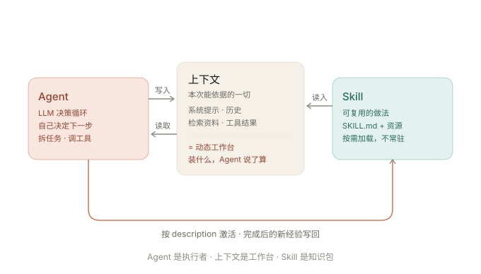

一句话：Agent 是“干活的执行者”，上下文是它此刻唯一能看到的“桌面”，Skill 是收纳了成熟做法的“抽屉”——平时不占地方，需要用哪个就打开哪个。三者不是并列零件，而是执行者 → 工作台 → 知识库的咬合关系。
🤖 Agent 回答“谁来做”
一个能自己拆步骤、调工具、看反馈、循环推进的系统。定义的关键词是自主决策 + 行动闭环。
→ 去读 agent.html
🗔 上下文回答“能看到什么”
一次推理能处理的全部 token：系统提示、历史、资料、工具结果。它是模型唯一的工作记忆，也决定它的“注意力预算”。
→ 去读 llm-context.html
📦 Skill 回答“经验在哪”
装着 SKILL.md 的可复用文件夹：把“做某类事的方法”打包，Agent 需要时才按 description 自动加载——可复用的程序性知识。
→ 去读 skill.html
一条主线：Agent 在“循环”，上下文在“变”，Skill 负责“该看哪页”的取舍。
用户给目标 → Agent（LLM 循环）决定下一步 → 需要“做某类事的方法”时，按 description 激活对应 Skill，把 SKILL.md 正文读入上下文 → Agent 照流程行动、调用工具 → 工具结果与观察又回填进上下文 → 回到循环。上下文因此是“被 Agent 持续维护的动态工作台”，而 Skill 是控制“什么值得进工作台”的知识封装。
注意两处双向性：上下文决定 Agent 能“想”得多好；Agent 反过来决定把什么塞进上下文（检索哪些、开哪个 Skill、要不要压缩）——这就是为什么 Anthropic 说“上下文工程是 Agent 时代提示工程的进化”。

| Agent | 上下文 Context | Skill | |
|---|---|---|---|
| 回答的问题 | 谁来做、下一步做什么 | 这一次能依据什么 | 这类活的最佳做法从哪来 |
| 核心机制 | ReAct：思考 → 行动 → 观察，循环推进 | 工作记忆：token 上限 + 位置效应（U 型） | 渐进式披露：发现 → 激活 → 执行 |
| 在本课题中的角色 | 执行者：拆任务、查资料、写文件、自我校验 | 工作台：当前会话能“看”到与依据的一切 | 知识抽屉：concept-microcourse 教 Agent “概念学习页怎么做” |
| 对另外两者的作用 | 动态决定“往上下文放什么”（含加载哪个 Skill） | 决定了 Agent 思考质量的边界，也是 Skill 加载后的“落点” | 为 Agent 提供“高质量该进上下文的内容”，反哺上下文质量 |
| 主要风险 | 自由度高，错误会随步数放大 | 越长越“烂”、越贵、越慢 | description 写不准会“叫不醒”；陌生来源需审计 |
① 上下文如何影响 Agent 的工作
Agent 的每一轮思考都受限于当前上下文：该检索的没检索 → 它不知道；塞进太多噪音 → 它“抓不住重点”（U 型 / 上下文腐烂）；历史太长 → 早期定的规则被挤到中间失效。所以工程重点不在“模型多聪明”，而在“每个推理点给它最小的高信号 token 集”——这正是上下文工程。子代理隔离、压缩、结构化笔记，本质都是在替 Agent 管理这张“桌面”。
② Skill 如何沉淀可复用的任务知识
把一次成功的做法写成 SKILL.md：步骤固定 → 每次执行结果一致 → 不再“每次从零解释” → 不长期占用上下文（按需加载）→ 随仓库做版本管理、可分享。它就是把专家经验编码成可执行知识：第一次手工教会 Agent，之后由 Skill 批量“教会”后续每次会话——学习成果因此被沉淀，而不是留在某次对话里。
入门（基础）→ 进阶（原理）→ 挑战（细节辨析）。选完即判对错。达标线：入门 4/4 ＋ 进阶 ≥3 ＋ 挑战 ≥2
本页是三者关系的汇总页，文献按「Agent / 上下文 / Skill」三块精选一手来源并列，便于一次性核对。
核对方式：链接于 2026-09-10 逐条联网访问确认可达；论文的标题、作者与提交日期取自 arXiv 官方 API 返回值，编号可在 arxiv.org 直接检索复核。以上均为公开的官方文档或学术论文原文（不含二手转述）；如需引用正式发表版本，请以论文页面标注的会议 / 期刊信息为准。